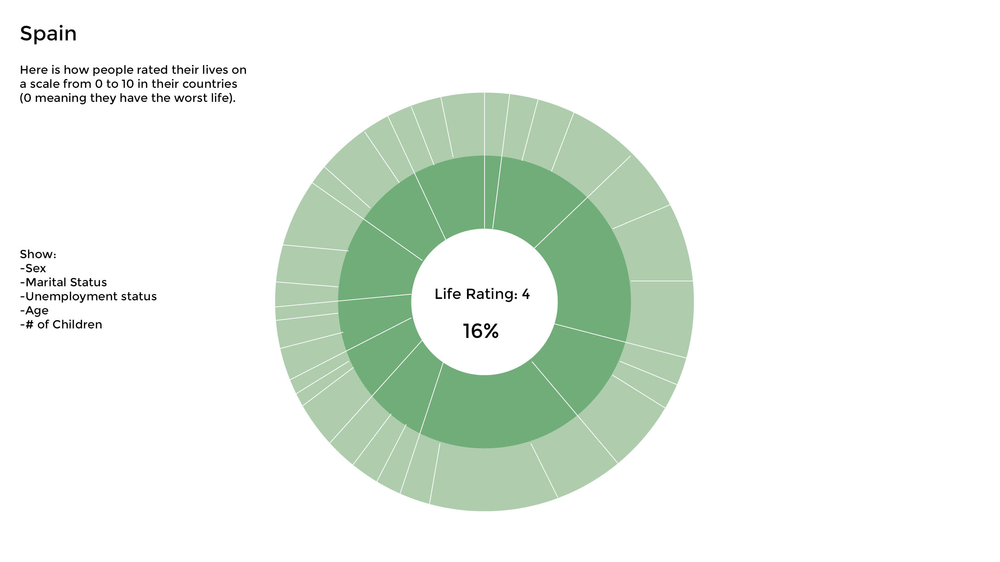
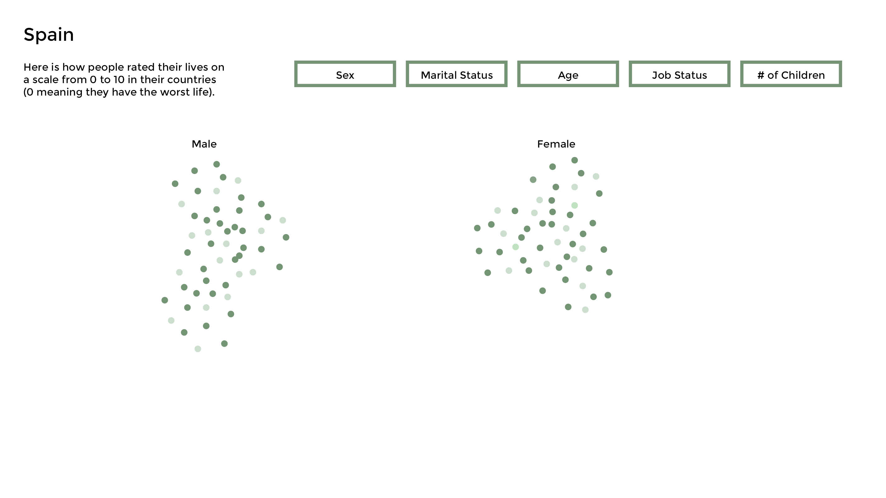

    
    
    

  <!-- <svg width="600" height="1100"></svg> -->
  <div class="container"></div>

  <script>

  		var drawTest = function(data) {
  			
  			var svg = d3.select("body main div.container").append("svg").attr("width", 90).attr("height", 200);

  			var rects = svg.selectAll("rect").data(data);

  			// var dataExtent = d3.extent(data, function(d, i) {
		   //    return d.values.length;
		   //  });

		    var radius = d3.scaleLinear()
		    .domain([0, 10])
		    .range(["#002901", "#C0E2C1"]);

  			rects.enter().append("rect")
  			.attr("x", function(d, i) {
  				return 10 + (3*(i%25));
  			})
  			.attr("y", function(d, i) {
  				return 10 + (3 * Math.floor(i/25))
  			})
  			.attr("width", 2)
  			.attr("height", 2)
  			.attr("fill", function(d, i) {
  				return radius(d["Q2. Imagine a ladder with steps numbered from 0 at the bottom to 10 at the top.  The top represents the best possible life for you; the bottom, the worst possible life.  On which step do you feel you personally stand at present time?"]);
  			});
  		}
  		var draw = function(data) {
  			var svg = d3.select("svg");

  			var circles = svg.selectAll("circle").data(data);
  			var nameText = svg.selectAll("text").data(data);
  			var numText = svg.selectAll("text").data(data);

  			var dataExtent = d3.extent(data, function(d, i) {
		      return d.values.length;
		    });

		    var radius = d3.scaleLinear()
		    .domain(dataExtent)
		    .range([20, 50]);

		    circles.enter().append("circle")
		    .attr("cy", function(d, i) {
		    	return 60 + (120 * Math.floor(i/5));
		    })
		    .attr("cx", function(d, i) {
		      return 60 + (120*(i%5)); // i == 0 ? 60 : 100;
		    })
		    .attr("r", function(d, i) {
		      return radius(d.values.length);
		    });

		    nameText.enter().append("text")
		    .attr("y", function(d, i) {
		    	return 50 + (120 * Math.floor(i/5)) - radius(d.values.length);
		    })
		    .attr("x", function(d, i) {
		      return 60 + (120*(i%5)); // i == 0 ? 60 : 100;
		    })
		    .attr("fill", "red")
		    .attr("text-anchor", "middle")
		    .text(function(d) {
		    	return d.key;
		    });

		    numText.enter().append("text")
		    .attr("y", function(d, i) {
		    	return 60 + (120 * Math.floor(i/5));
		    })
		    .attr("x", function(d, i) {
		      return 60 + (120*(i%5)); // i == 0 ? 60 : 100;
		    })
		    .attr("fill", "white")
		    .attr("text-anchor", "middle")
		    .text(function(d) {
		    	return d.values.length;
		    });
  		}

	    d3.csv("Global Attitudes - shortCSV.csv", function(error, data) {

	    	var nestByCountry = d3.nest()
	    	.key(function(d, i) {
	    		return d.Country;
	    	})
	    	.entries(data);

	    	var nestByQ1 = d3.nest()
		  	.key(function(d, i) {
		  		return d["Q1. To begin, how would you describe your day today�has it been a typical day, a particularly good day, or a particularly bad day?"];
		  	})
		  	.key(function(d, i) {
		  		return d.Country;
		  	})
		  	.entries(data);

		  	var totalPpCountry = [];
		  	for (var i = 0; i < nestByCountry.length; i++) {
			  	totalPpCountry.push(nestByCountry[i].values.length);
		  	}

		  	var totalQ1TyppCountry = [];
	  		for (var i = 0; i < nestByQ1[0].values.length; i++) {
		  		totalQ1TyppCountry.push(nestByQ1[0].values[i].values.length);
	  			// console.log(nestByQ1[0].values[i].values.length);
	  			// console.log(nestByQ1[0].values[i]);
	  		}

		  	var totalQ1GoodpCountry = [];
	  		for (var i = 0; i < nestByQ1[1].values.length; i++) {
		  		totalQ1GoodpCountry.push(nestByQ1[1].values[i].values.length);
	  			// console.log(nestByQ1[0].values[i].values.length);
	  			// console.log(nestByQ1[0].values[i]);
	  		}

		  	var totalQ1BadpCountry = [];
	  		for (var i = 0; i < nestByQ1[2].values.length; i++) {
		  		totalQ1BadpCountry.push(nestByQ1[2].values[i].values.length);
	  			// console.log(nestByQ1[0].values[i].values.length);
	  			// console.log(nestByQ1[0].values[i]);
	  		}

	  		var avgQ2ByCountry = [];
	  		for (var i = 0; i < nestByCountry.length; i++) {
	  			var temp = 0;
	  			var total = nestByCountry[i].values.length;
	  			for (var j = 0; j < nestByCountry[i].values.length; j++) {
	  				var val = nestByCountry[i].values[j]["Q2. Imagine a ladder with steps numbered from 0 at the bottom to 10 at the top.  The top represents the best possible life for you; the bottom, the worst possible life.  On which step do you feel you personally stand at present time?"];
	  				if (!isNaN(parseInt(val)) && parseInt(val) != 98 && parseInt(val) != 99) {
	  					temp = temp + parseInt(val);
	  				} else { total = total - 1; }
	  			}
	  			var average = temp / total;
	  			avgQ2ByCountry.push(average);
	  		}

	  		var modeQ2ByCountry = [];
	  		for (var i = 0; i < nestByCountry.length; i++) {
	  			var temp = [];
	  			var mode = 0;
	  			var greatestFreq = 0;
	  			for (var j = 0; j < nestByCountry[i].values.length; j++) {
	  				var val = nestByCountry[i].values[j]["Q2. Imagine a ladder with steps numbered from 0 at the bottom to 10 at the top.  The top represents the best possible life for you; the bottom, the worst possible life.  On which step do you feel you personally stand at present time?"];
	  				if (!isNaN(parseInt(val)) && parseInt(val) != 98 && parseInt(val) != 99) {
	  					temp.push(parseInt(val));
	  				}
	  			}

	  			for (var k = 0; k < 11; k++) {
	  				var currArr = temp.filter(function(d) {return d == k});
	  				if (currArr.length > greatestFreq) {
	  					greatestFreq = currArr.length;
	  					mode = k;
	  				}
	  			}
	  			modeQ2ByCountry.push(mode);
	  		}

	  		var getPercentArray = function(parArr, totArr) {
	  			var temp = [];
	  			for (var i = 0; i < totArr.length; i++) {
	  				var percent = parArr[i] / totArr[i];
	  				temp.push(percent);
	  			}
	  			return temp;
	  		}

		  	console.log(nestByCountry);
		  	console.log(modeQ2ByCountry);
		  	// console.log(nestByQ1);
		  	// console.log(totalPpCountry);
		  	// console.log(totalQ1TyppCountry);
		  	// console.log(getPercentArray(totalQ1TyppCountry, totalPpCountry));
		  	// console.log(getPercentArray(totalQ1GoodpCountry, totalPpCountry));
		  	// console.log(getPercentArray(totalQ1BadpCountry, totalPpCountry));


		  	//draw(nestByCountry);
		  	// for (var i = 0; i < 44; i++) {
		  	// 	drawTest(nestByCountry[i].values);
		  	// }
	    });
  </script>

  <br />
  <a href="past-assignments.html">See previous assignments.</a>
